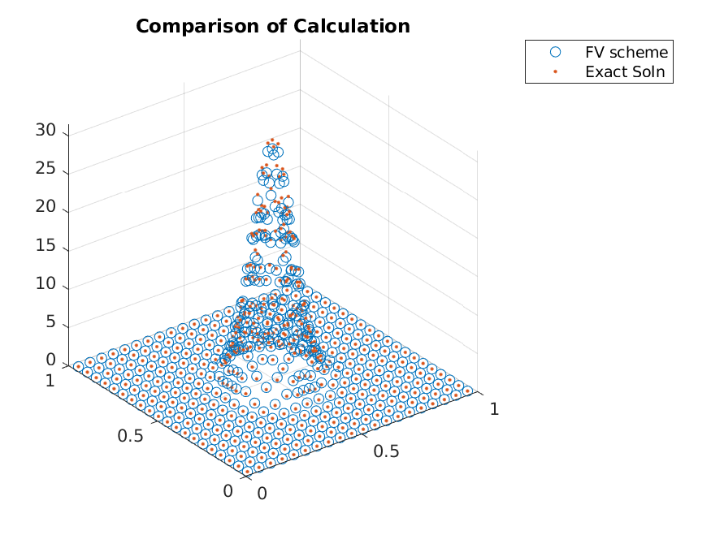
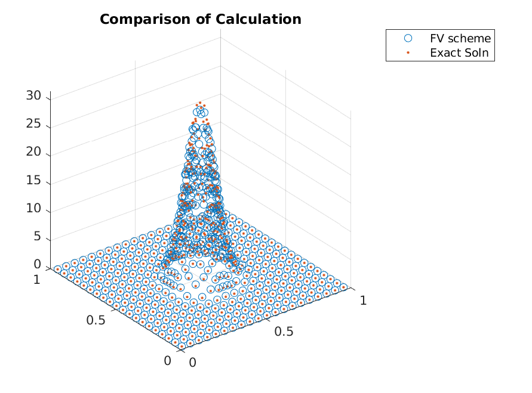
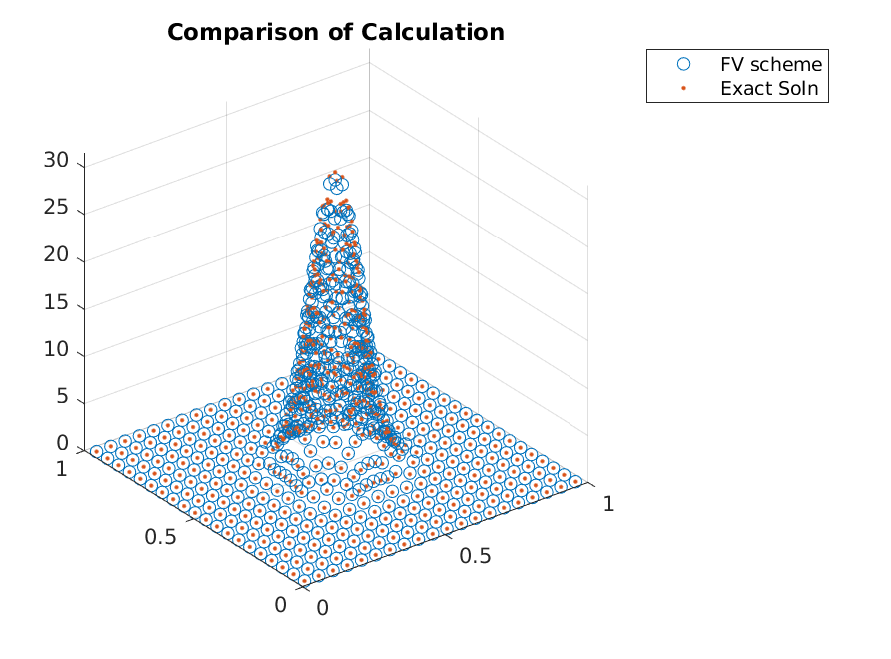
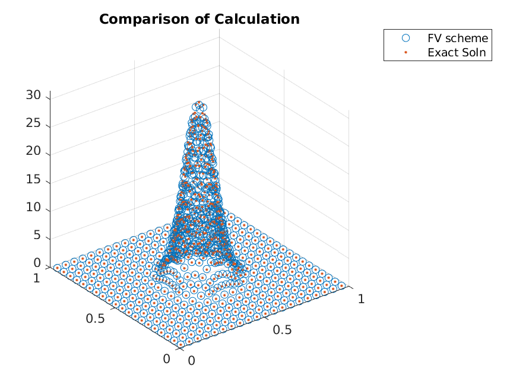
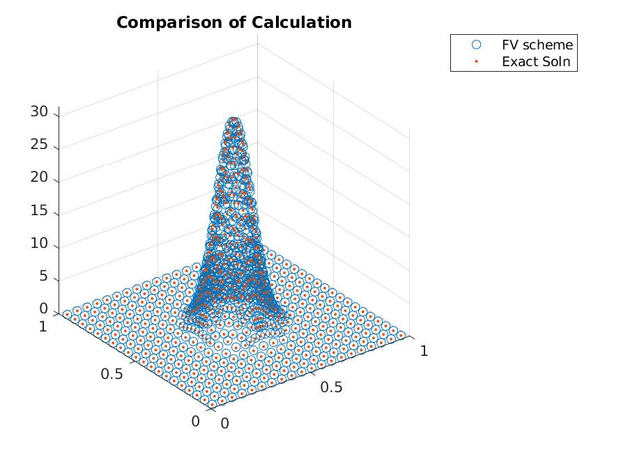

OU Process with Adaptive Refinements¶
Expected Read Time: 2~6 minutes
In this tutorial, we will work through an example of applying adaptive refinements and as a starting point will take the bad parameter values from the previous tutorial. Recall that we are solving for the steady-state distribution of resulting from the Ornstein-Uhlenbeck Process
in 2-dimension. Since the code is short, we reproduce it here in its entirety.
>> n_dim = 2;
>> n_points = 20;
>> int_sig = 0.1;
>> make_plots = true;
>> mu = 0.495.*ones(1, n_dim);
>> theta = 1.*ones(n_dim,1);
>> sigma = int_sig.^2.*ones(n_dim, 1);
>> grid = afv_grid(2);
>> cut_points = cell(n_dim, 1);
>> cut_points_1d = linspace(0, 1, n_points+1);
>> cut_points_1d = cut_points_1d(2:end-1)';
>> for iter_dim = 1:n_dim
>> cut_points{iter_dim} = cut_points_1d;
>> end
>> grid.split_init(1, cut_points);
>> grid.extract_edges();
>> x_i = grid.edge_midpoints();
>> for iter_dim = 1:n_dim
>> cur_ind = find(grid.e2dir(1:grid.num_e) == iter_dim);
>> grid.drift(cur_ind) = -theta(iter_dim).*(x_i(cur_ind, iter_dim) - mu(iter_dim));
>> end
>> for iter_dim = 1:n_dim
>> cur_ind = find(grid.e2dir(1:grid.num_e) == iter_dim);
>> grid.diffusion(cur_ind) = sigma(iter_dim);
>> end
>> A = grid.compute_transition_matrix_modified();
>> [g, ~] = eigs(A_FP, 1, 'sm');
>> g = g./sum(g);
The accuracy seen from this scheme was not great.
>> x_i = grid.node_midpoints();
>> scatter3(x_i(:,1),x_i(:,2),g./grid.node_weights);
>> hold on;
>> scatter3(x_i(:,1),x_i(:,2),g_true(x_i),'.');
{kind=link}
One should reduce the domain for this problem instead of using adaptive refinements, but as an illustration, we will adaptively refine the grid by splitting the grid points where necessary. This requires one to use some sort of metric to consider the expected gain from splitting a cell, and the normalized weight of a cell will be used.
We can compute the normalized weight via
>> drift_i = -theta'.*(x_i - mu);
>> drift = max(abs(drift_i), [], 2);
>> metric = g.*drift;
Given the metric, one can split a cell when it is in a top fraction of the metric values (one can update based on some cutoff value as well).
>> [~, ind_adapt] = sort(metric, 'descend');
>> ind_adapt = ind_adapt(1:floor(adapt_fraction*length(ind_adapt)));
Given the nodes to refine, we use the split function. This function requires the node to split and the cut points in each coordinate direction. Using the midpoints as cut points, we can apply the function by
>> grid.split(ind_adapt, mat2cell(x_i(ind_adapt,:), ones(length(ind_adapt),1), ones(n_dim, 1)));
Given the updated grid, one has to update the edge information by calling extract_edges, but otherwise, the computation is the same as before, i.e.,
>> grid.extract_edges();
>> x_i = grid.edge_midpoints();
>> for iter_dim = 1:n_dim
>> cur_ind = find(grid.e2dir(1:grid.num_e) == iter_dim);
>> grid.drift(cur_ind) = -theta(iter_dim).*(x_i(cur_ind, iter_dim) - mu(iter_dim));
>> end
>> for iter_dim = 1:n_dim
>> cur_ind = find(grid.e2dir(1:grid.num_e) == iter_dim);
>> grid.diffusion(cur_ind) = sigma(iter_dim);
>> end
>> A = grid.compute_transition_matrix_modified();
>> [g, ~] = eigs(A_FP, 1, 'sm');
>> g = g./sum(g);
resulting in

Iterating a few more times, we can clearly see that the adaptive refinements lead to accuracy gains without adding points in regions that already have zero mass.
    {kind=link}
{kind=link}
{kind=link}
{kind=link}
{kind=link}